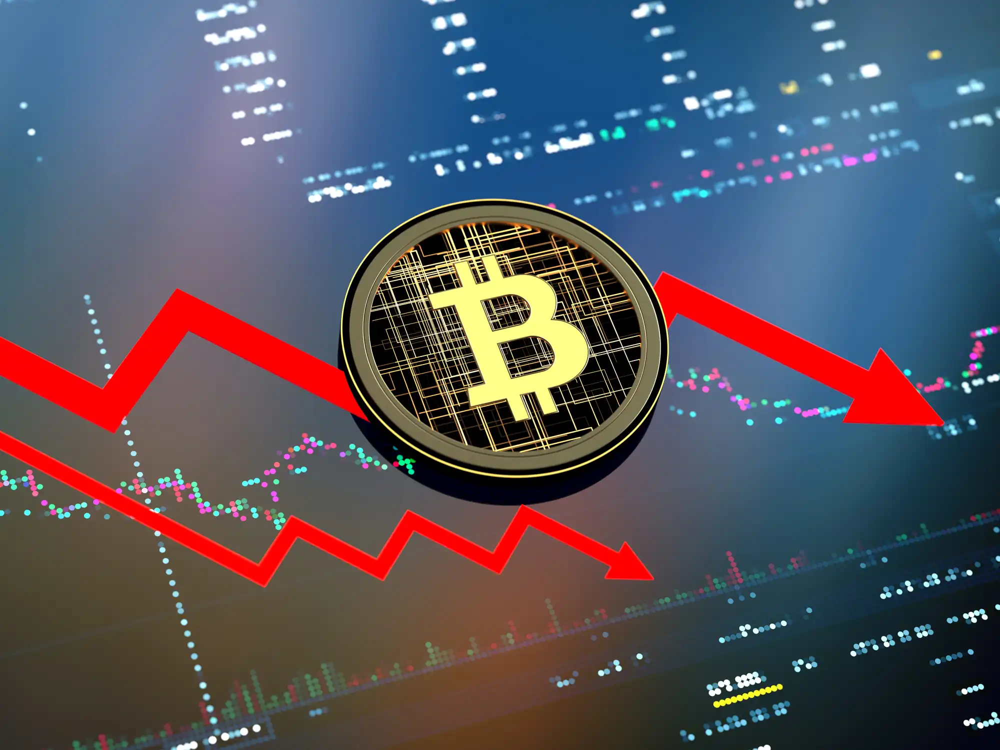

Artigos Relacionados

Um ano após lei controversa, El Salvador pode estar a um passo de abandonar Bitcoin
Pressão do FMI deve levar à revogação da lei que

Bitcoin se aproxima das piores perdas mensais desde 2011 com preço do BTC em US$ 19 mil
O Bitcoin (BTC) desceu ainda mais na abertura de Wall Street em 30 de junho, quando as ações dos Estados Unidos abriram com um gemido.
'Inverno cripto': entenda a queda das moedas digitais e se é hora de investir
As recentes quedas nos preços desses ativos digitais evidenciaram uma série de problemas, mas os motivos para este movimento encontram paralelos na economia tradicional

Com mercado cripto em forte queda, Binance congela saques de bitcoin e preocupa usuários
Solicitações de saque na rede Bitcoin foram suspensas temporariamente na Binance e causou preocupação em dia de forte volatilidade no mercado cripto;

Noticias Cripto: Binance, Bitso, BYAZ e NFT.Rio anunciam novidades para o mercado
Confira algumas das novidades do mercado de criptomoedas no Brasil
Criptomoedas sob ataque: investidores famosos comentam queda de preços e criticam o setor